Download the games
A plain list of every Sandbox Software and Bizarre game, each a ZIP of the real DOS files: unzip it, then run it in DOSBox or open it in Game-Maker. With each game’s version and a short description. Each ZIP is free to keep and share.
Unzip first. On a DOS PC, read INSTALL.TXT and run INSTALL from the source drive and folder to copy the game to the hard disk (INSTALL D: chooses D: instead of C:). Check each COPY message, then run CONFIG once and the game’s .EXE from its installed folder. INSTALL.TXT includes manual and floppy copying instructions. A ZIP is not a floppy image. In DOSBox, the game can also run directly from the unzipped folder.
Sandbox Software games
Made for this project with Game-Maker.
-
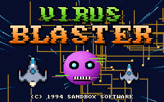
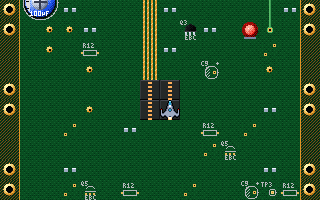
Virus Blaster version 2.5
GLITCH, a virus off a bad BBS download, is eating the family 486. Shrink down, launch the BLASTER nano-fighter and blast your way up the motherboard, through m…
-
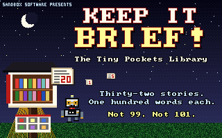
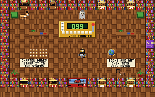
KEEP IT BRIEF! The Tiny Pockets Library version 1.4
Behind the little red door of The Dog House is a library much bigger than the box, and last night every word fell out of every book. As Mystery Robot Joe, the…
-
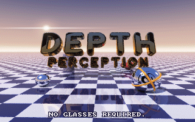
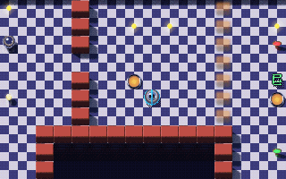
Depth Perception version 1.5
Count Polygon is stealing the polygons out of the render of the century. Roll Ray, the chrome sphere from every ray-tracing demo, through six ray-traced scenes…
-
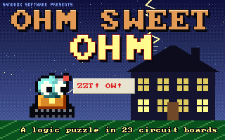
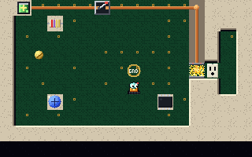
Ohm Sweet Ohm version 1.5
A thunderstorm has scrambled the Bitmores' Smart Home, and Watt, a pocket-sized repair robot, must roll through twenty-three haywire circuit boards to get home…
-
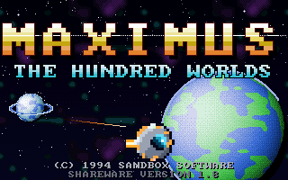
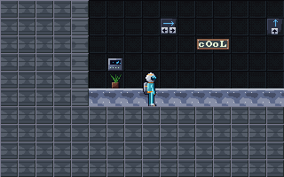
Maximus: The Hundred Worlds version 1.8
Courier Max crosses a galaxy of 88 worlds by pod, on foot, by rover and in a diving bell, hunting the ten star-shards that can relight the dead star at its hea…
-
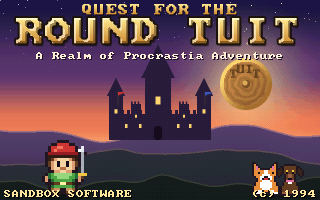
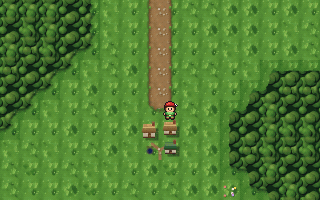
Quest for the Round Tuit version 1.6
King Dillydally IX will save the kingdom as soon as he gets a round tuit, and Lord Deadline has stolen it. A full role-playing adventure across Procrastia: fou…
-
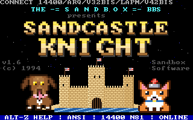
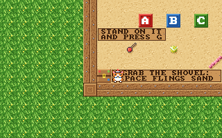
Sandcastle Knight version 1.6
Teddy the corgi knight takes back the backyard sandbox after his big sister Gwinn's zoomies flattened every castle. Build towers of sand, toss tennis balls, sh…
-
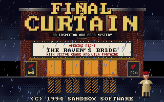
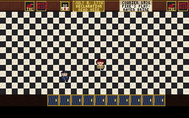
Final Curtain version 1.7
Opening night at the Paragon Theatre, 1936: the star dies on stage in Act III, stabbed with a trick dagger that wasn't. Inspector Ada Penn has until dawn to se…
-
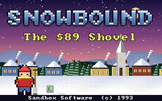
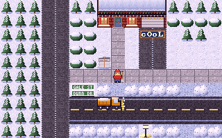
Snowbound: The $89 Shovel version 1.5
Fort Ashby, West Virginia, December 1992. Shovel the whole neighborhood at $1 a scoop, sled down Jamie Street, and get $89 to LaVale Mall before the price of G…
-
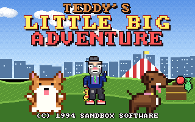
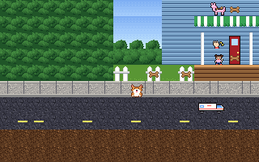
Teddy's Little Big Adventure version 1.4
Gwinn ran off with Doc Leo's clown costume, and tonight is the Clown Club's Big Show! Hop, bark, dig, sit, spin and play dead across town as Teddy, a little co…
-
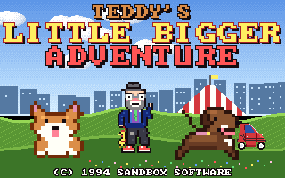
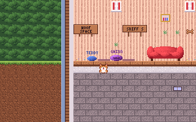
Teddy's Little Bigger Adventure version 1.5
The morning after the Big Show, Gwinn's bed is empty. Sniff out her trail across town, over the river and out to the Tri-County Fair as Teddy the corgi, and no…
-
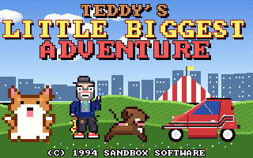
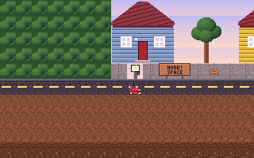
Teddy's Little Biggest Adventure version 1.7
It's Teddy's birthday, and nobody says so. Run Doc Leo's errands across every place from the first two adventures as Teddy, and MEANWHILE... play as Gwinn and…
-
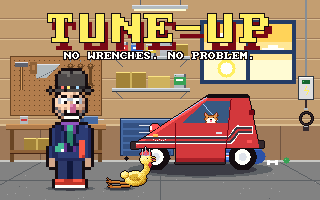
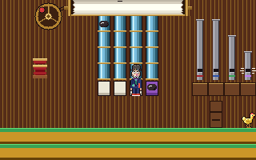
Tune-Up version 2.2
It's the morning of the Clown Club parade, and THE CHEZ honks like a kazoo: Gwinn tipped the instrument trunk into the car. With no wrenches, Doc Leo shrinks d…
-
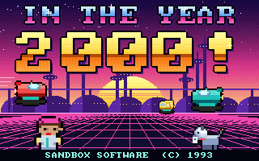
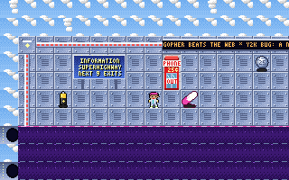
In The Year 2000! version 1.9
It's the year 2000! Cars fly, robots mow, dinner comes in a pill, and every phone booth is a 25-cent teleporter. Dex Dynamo's robot dog ate his science report,…
Bizarre games
Songs by The Bard of Bizarre, turned into games.
-
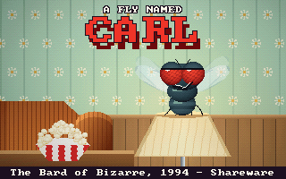
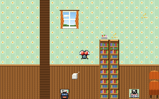
A Fly Named Carl version 1.4
You are Carl, the fly in the room, and you're winning. Eat his TV snacks, flash a smile from every wall, buzz his ear at 3:47 AM, barrel-roll past the dish tow…
-
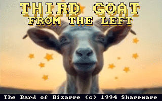
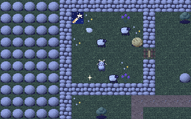
Third Goat from the Left version 1.3
Bethlehem, the holy night. You are the goat nobody painted: eat your way out of the shepherds' fold, scream your fainting cousins stiff, get lost in the crowd,…
-
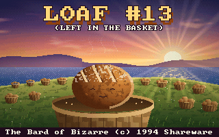
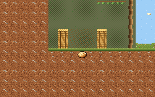
Loaf #13 (Left in the Basket) version 1.4
You are Loaf #13, the one nobody picked when the five thousand were fed. Roll out of your basket and across the hillside past hungry hands, big feet and flying…
-
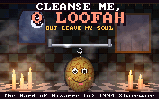
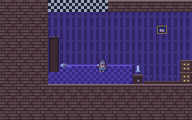
Cleanse Me, O Loofah, But Leave My Soul version 1.5
She said, "Don't touch the pink one. It's mine!" You scrubbed with it anyway: the loofah of Lucifer, peach or coral, some evil hue, smelling of grapefruit and…
-
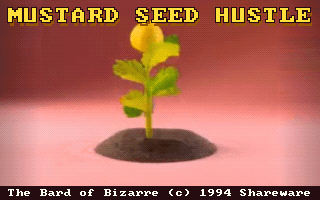
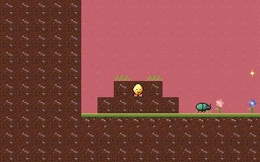
Mustard Seed Hustle version 1.4
You are a mustard seed, the smallest thing in all the land, with the greatest feet. Hop out of your mound, lace up and hustle across the garden, push roots dee…
-
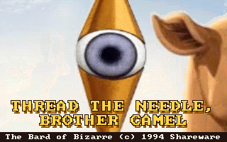
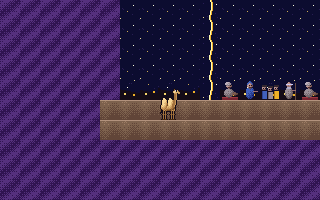
Thread the Needle, Brother Camel version 1.4
The rich man walked away from Jesus with his coins and his frown, and left his camel behind with saddlebags full of gold. Was He talkin' 'bout you? Give the go…
-
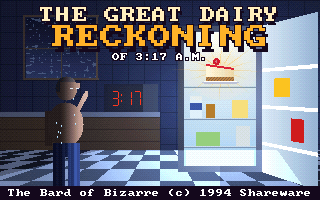
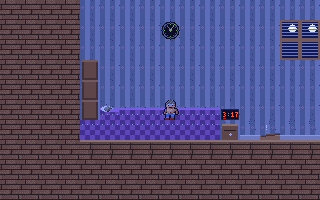
The Great Dairy Reckoning of 3:17 A.M. version 1.4
It's 3:17 a.m., you're lactose intolerant, and there's a slice of New York cheesecake in the fridge. Tiptoe past your sleeping wife, the creaky board, the dogs…
-
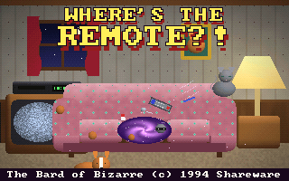
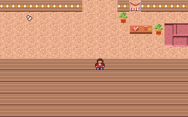
Where's the Remote?! version 1.4
Friday night, snacks, the tape in the VCR, and the remote is GONE. Lift the couch cushions, lift the dog, look under the cat, ask the Voice-O-Matic 2000 (it or…
-
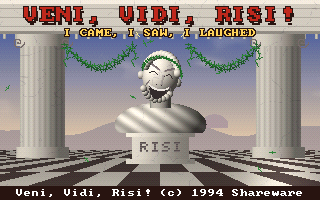
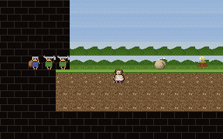
Veni, Vidi, Risi! version 1.5
I came, I saw, I laughed. In Rome nobody laughs at Marcus Iocundus's comic songs in Latin, and then, at his banquet for the senators, his dog Rufus breaks wind…
-
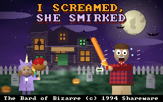
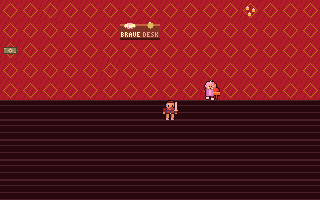
I Screamed, She Smirked version 1.5
You take your girlfriend's kid, Lily (eight, a unicorn hoodie, a caramel apple as big as her head), to a haunted house. The sign says MILD SCARES FOR ALL AGES.…
-
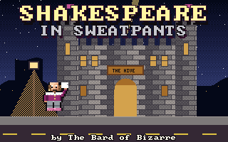
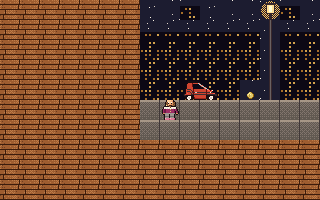
Shakespeare in Sweatpants version 1.3
Open-mic night at The Hive, the coffee house with a castle for a front in Oakland. Will, the regular in the starched ruff, the velvet doublet and the gray swea…
-
Certified Rat Tickler version 1.4
Doc Leo, PhD (Comedic Science), has a brand new certificate in rat tickling and no rats yet. Pin first, then tickle, or a rat will never read it as a laugh: th…
Game-Maker: Sandbox Edition · play in your browser · source code · A modified fork of RSD Game-Maker 3.0 — not an original RSD release.